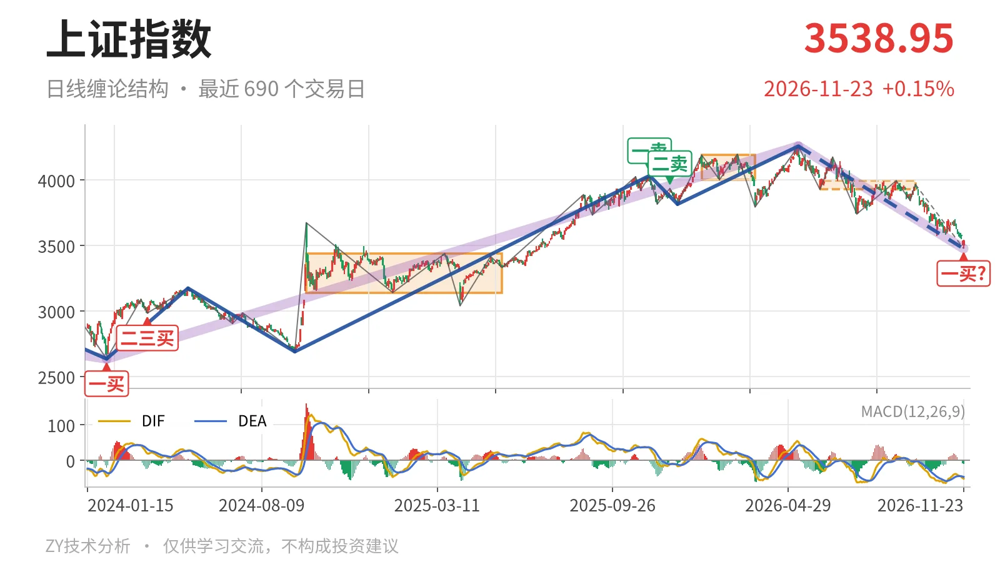
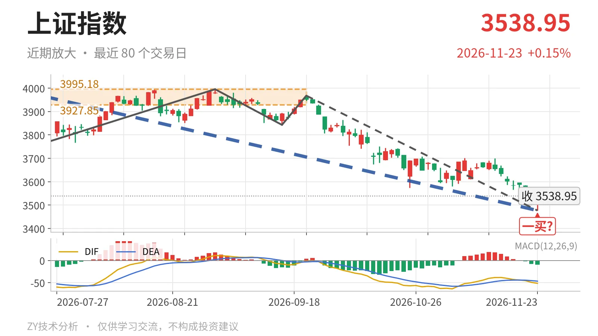

上证指数｜跌破3928点中枢，暂定一买无背驰

最近日线中枢 3927.85—3995.18点，收盘位于中枢之下
一句话：日线中枢失守，暂定一买未现背驰，结构偏弱。
🧭 走势结构：上涨中的下跌段还在延续
更大级别上涨仍未被破坏，但日线线段走的是5月14日以来的下跌段。2024年2月5日2635.09点至2026年5月14日4258.86点的上涨段涨61.6%，还没结束；5月14日至11月23日的下跌段已经由4258.86点回落到3476.65点，跌18.4%，内部走出7笔，仍在延续。这也是上涨结构中的深度回调段，而不是已经转成新的单边下跌结构。

📍 中枢与位置：跌破最近中枢，重心下移
最新收盘3538.95点已经跌破最近的日线笔中枢。6月8日至9月22日中枢区间为3927.85—3995.18点，下沿3927.85点，收盘较该下沿低约9.9%。最近中枢尚在构造中，但价格明显跌出下沿；前一个1月14日至3月23日中枢在4002.78—4190.87点，两中枢中轴由4096.82点下移到3961.51点，属于中枢下移。下方仍有2024年10月8日至2025年5月27日中枢，上沿3439.05点，最新价尚未打回该中枢内部。
🎯 买卖点：一买只是暂定
11月23日3476.65点的一买落在9月22日至11月23日的下跌笔低点，该笔没有结束，所以这是暂定的一买。更早的卖点结构相对明确：2025年11月14日一卖4034.08点，2025年12月8日二卖3936.31点，一个比一个低。由于当前下跌笔还在延续，这暂定的一买会随这一笔的延续而变化，在反向笔形成前不能当作已经固定的转折结构。

📉 背驰：新低力度未减
关键比较在最近两段同向下跌笔之间。9月1日至9月16日一笔从3995.18点跌至3842.72点，绿柱面积52，DIF低点-8.0；9月22日至11月23日一笔从3967.68点跌至3476.65点，绿柱面积464，DIF低点-64.0。低点新低后，绿柱面积由52扩到464，DIF低点由-8.0降到-64.0，属于力度放大，不是“新低不新弱”。因此9月22日以来的下跌笔没有出现背驰，暂定一买也缺少背驰支持。
🔑 关键位置：反抽不过3928点则弱
后续结构强弱先看3928点附近。最近中枢下沿3927.85点已被跌破，反抽若回不到3928点上方，结构上可构成三卖，下跌段还有延续压力。若能重新站上3928—3995点区间，回落更可能只是对最近中枢的震荡扩展。下方支撑带看3419—3439点，由2021年7月28日至2023年5月9日的线段级别中枢上沿3418.95点和2024年10月8日至2025年5月27日的日线笔中枢上沿3439.05点组成；最新收盘3538.95点尚未跌破该支撑带。综合看，结构偏弱，弱在最近中枢被跌破后无反抽、当前下跌笔力度未减。
⚠️ 本文为基于公开行情数据的缠论技术结构记录，由程序自动计算并生成，仅供学习交流，不构成任何投资建议。市场有风险，投资需谨慎。